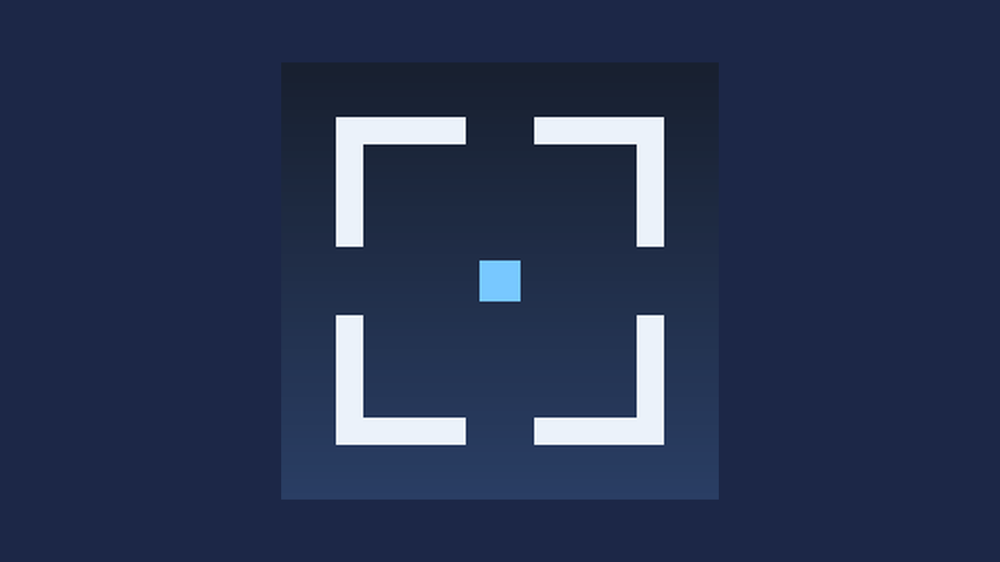

تكستر
Bareview UI — واجهة نظيفة للتصوير
يخفي أزرار الحركة والأزرار الفوقية من شاشة الجوال حتى تصوّر براحتك، وكل شي يبقى يشتغل.
⬇ تحميل 216.2 KB
✔ يشتغل على: Bedrock 26.62، 1.21+ · يحتاج Resource Pack
✔ بدأ التحميل! الحين سوّ الخطوات اللي تحت 👇
🛠 شلون أثبّته؟
عن هذا العمل
مثالي لصنّاع المحتوى على الجوال: شاشة نظيفة بدون أزرار تغطي اللقطة.
• يخفي أزرار الحركة على الشاشة، والأزرار الأربعة الفوقية، وخلفية أزرار التجارة مع القروي.
• شكل بس: كل الأزرار تبقى تشتغل لو ضغطت مكانها.
• 4 خيارات من زر الترس ⚙ بإعدادات الحزمة: إخفاء الكل (الافتراضي)، أو أزرار الحركة بس، أو الأزرار الفوقية بس، أو أزرار التجارة بس.
• يخفي أزرار الحركة على الشاشة، والأزرار الأربعة الفوقية، وخلفية أزرار التجارة مع القروي.
• شكل بس: كل الأزرار تبقى تشتغل لو ضغطت مكانها.
• 4 خيارات من زر الترس ⚙ بإعدادات الحزمة: إخفاء الكل (الافتراضي)، أو أزرار الحركة بس، أو الأزرار الفوقية بس، أو أزرار التجارة بس.
معلومات
| النوع | تكستر |
| النسخة | Bedrock |
| المحمّل / الصيغة | Resource Pack |
| إصدارات ماين كرافت | 26.62، 1.21+ |
| إصدار الملف | 2.0.0 |
| الحجم | 216.2 KB |
| التحميلات | 4 |
| تاريخ النشر | 2026-11-17 |
واجهةتصويرجوال
سجل التحديثات
- 2.0.0 — الإصدار الأول على الموقع
🔒 بصمة الملف (SHA-256) للتأكد إنه أصلي
d6056f3110e673b95c5288cf88ba19866371f467126a48384b9066bfcd1fda6a
💬 آراء اللاعبين
ما فيه آراء بعد. كن أول واحد!
الرأي يحتاج حساب GitHub مجاني، وما يظهر هنا إلا بعد ما أراجعه.